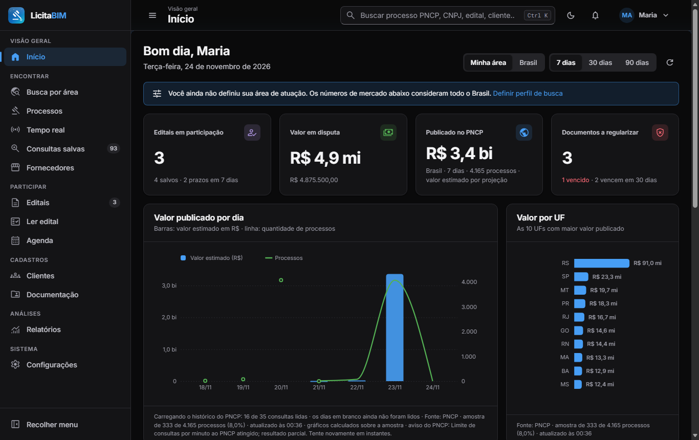
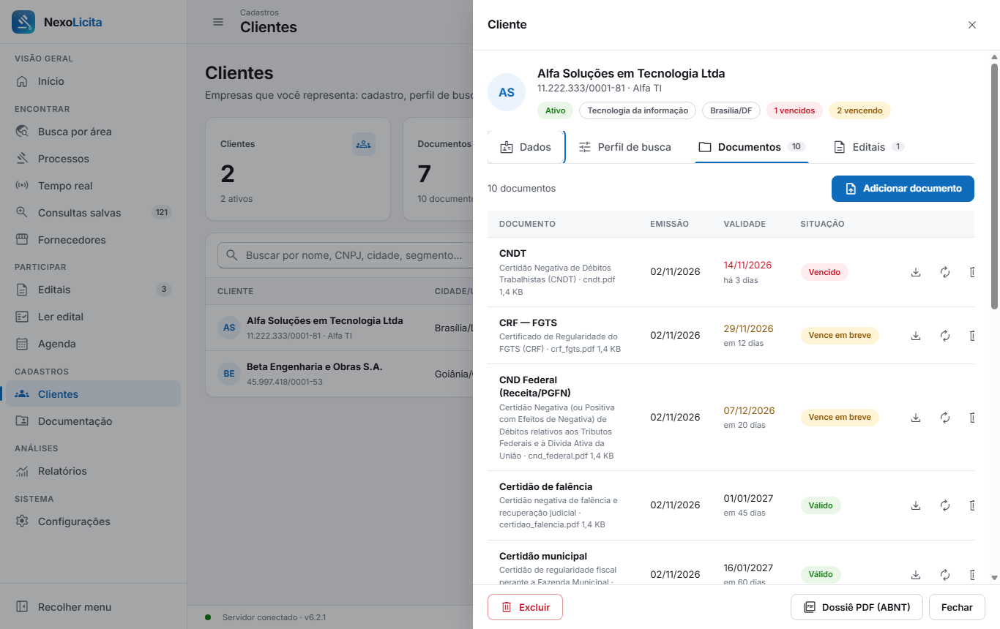
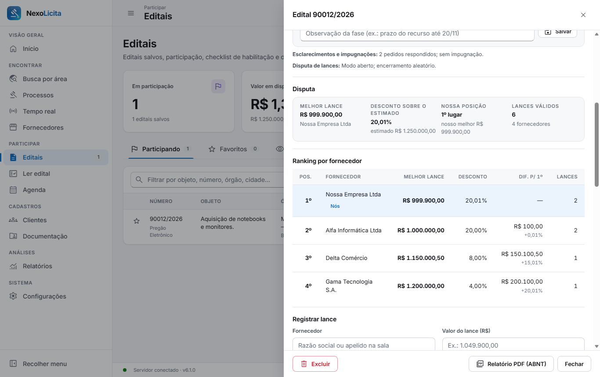
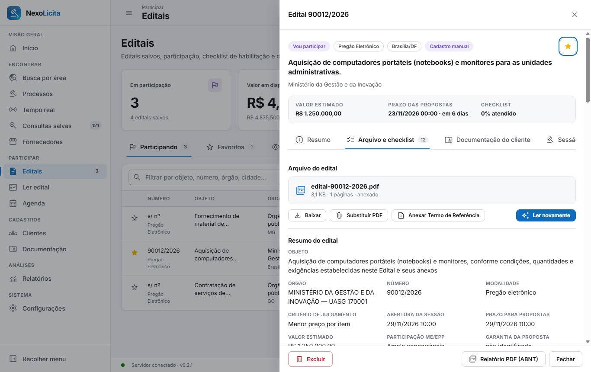
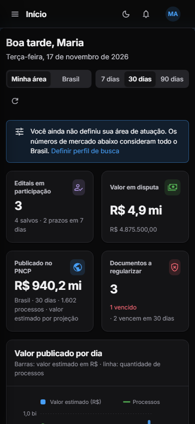
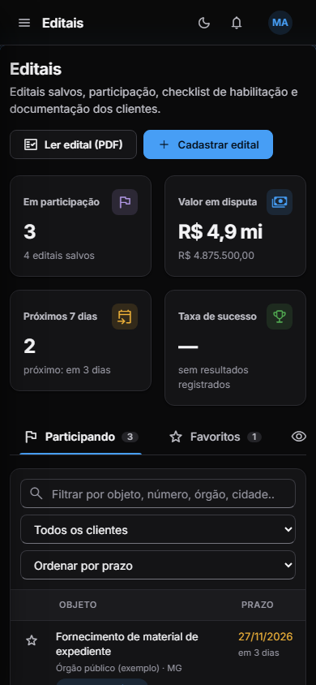
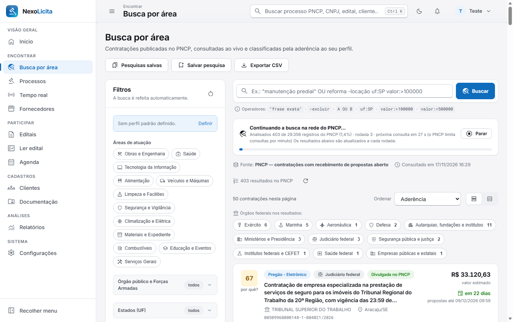
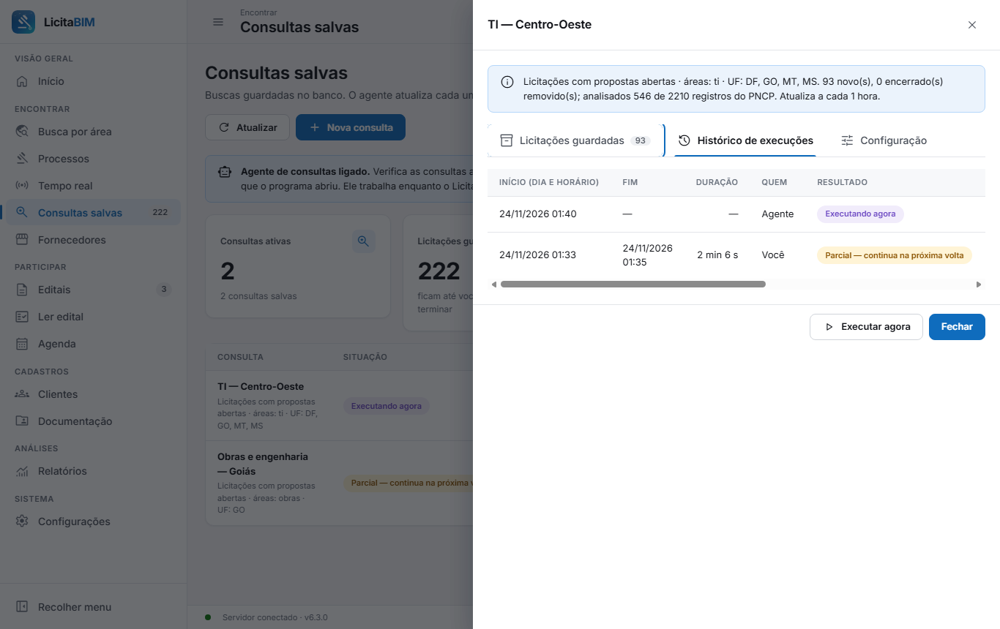

Você decide o preço.
O LicitaBIM organiza o resto.
Encontra o edital no PNCP, lê o PDF, monta o checklist de habilitação, confere a validade de cada certidão e acompanha a sessão pública lance a lance. A decisão de participar e o valor da proposta continuam com você.
Gratuito e de código aberto (licença MIT) · instala em minutos · seus dados ficam no seu computador

Seus dados nunca saem da sua empresa
O LicitaBIM roda no seu computador. Editais, propostas, certidões e a lista de clientes ficam no seu disco, não numa nuvem de terceiros. Quem acessa de fora entra pela sua rede privada, com login e senha.
- check_circleBanco de dados e arquivos guardados na pasta de dados do Windows, preservados nas atualizações.
- check_circleAcesso pelo celular via Tailscale, com HTTPS e sem abrir portas no roteador.
- check_circlePerfis de acesso e registro de auditoria de cada alteração.

Um módulo para cada etapa da sua licitação
Cada tela cuida de uma parte do caminho e entrega o resultado para a próxima. Nada é enviado em seu nome: o LicitaBIM organiza, você confere e decide.
Busca por área
Contratações abertas no PNCP, classificadas pela aderência ao seu perfil, com o motivo de cada nota.
EncontrarConsultas salvas
Monte a busca uma vez; ela roda sozinha no intervalo escolhido e guarda cada licitação nova.
EncontrarProcesso 360°
Itens, arquivos, resultados, histórico e perfil do órgão de qualquer compra do PNCP.
EncontrarAtas (carona)
Atas de registro de preço vigentes com itens e fornecedores, para avaliar adesão.
EncontrarPlanos de compra
O PCA dos órgãos: o que eles planejam comprar no ano, antes do edital sair.
AnteciparLer edital
Lê o PDF e monta o checklist de habilitação com a página e o trecho de cada exigência.
AnalisarDocumentação
Certidões de todos os clientes com validade, alertas de vencimento e onde emitir cada uma.
HabilitarSessão pública
Fases do rito, lances por fornecedor com ranking e desconto, mensagens do pregoeiro.
DisputarTempo real
Monitora os processos salvos e avisa quando muda situação, prazo ou valor.
AcompanharFornecedores
Cadastro na Receita, contratos em todo o Brasil e itens vencidos de qualquer CNPJ.
InteligênciaContratos
Depois da vitória: vigência, termos aditivos e notas fiscais de cada contrato.
ExecutarRelatórios
Painel de mercado com valores reais em R$ e documentos em PDF no padrão ABNT.
AnalisarA sessão pública organizada, fase a fase
Registre os lances de cada fornecedor e veja na hora o melhor lance, o desconto sobre o valor estimado e a sua posição no ranking. As mensagens do pregoeiro ficam junto do processo.
- trending_downDesconto calculado sobre o valor estimado do edital.
- format_list_numberedRanking por fornecedor em cada fase do rito.
- historyHistórico completo para o recurso ou para a próxima disputa.

O edital lido por regras da Lei 14.133
Envie o PDF ou baixe direto do PNCP. O LicitaBIM extrai objeto, modalidade, datas, valor, garantias e exigências de ME/EPP, e monta o checklist de habilitação jurídica, fiscal, técnica e econômico-financeira, com a página de cada exigência.
- menu_bookLê também o Termo de Referência quando o edital remete a ele.
- ruleCompara o checklist com os documentos do cliente e mostra o % de prontidão.
- picture_as_pdfRelatório do edital em PDF no padrão ABNT.

Acompanhe tudo pelo celular
Ligue o acesso pela rede Tailscale nas Configurações e abra o LicitaBIM no celular como um aplicativo. Os prazos, a sessão e os documentos ficam na palma da mão, sem expor o programa na internet.
- install_mobileInstala como aplicativo (PWA) no Android e no iPhone.
- httpsEndereço HTTPS da sua rede privada, válido só para aparelhos da sua conta.
- dark_modeTema claro e escuro, pensado para telas pequenas.


Compare com o jeito que a licitação é feita hoje
Portal aberto numa aba, planilha em outra, certidões numa pasta e anotações da sessão no caderno. O LicitaBIM junta tudo num lugar só.
cancelSem o LicitaBIM
- removeProcurar edital a edital no PNCP, todo dia, com as mesmas palavras.
- removeLer dezenas de páginas para achar o que a habilitação exige.
- removeDescobrir na véspera que a certidão venceu.
- removeLances e mensagens da sessão anotados à mão.
- removeRelatórios montados do zero para cada cliente.
check_circleCom o LicitaBIM
- checkConsultas salvas rodam sozinhas e guardam cada licitação nova.
- checkChecklist de habilitação pronto, com página e trecho do edital.
- checkValidade de cada certidão e alerta antes de vencer.
- checkRanking de lances e desconto calculados na hora.
- checkPDF no padrão ABNT com um clique.
O preço é seu. O resto o LicitaBIM organiza.
Você conhece a sua margem e o seu piso. O programa cuida de encontrar, ler, conferir, lembrar e registrar, para você chegar na sessão com tudo no lugar.
Um dia real com o LicitaBIM
Clique num horário para ver o que acontece em cada momento do dia.
Veja as telas de verdade
Capturas do programa em uso, com dados de exemplo e números de mercado vindos do PNCP ao vivo.

Um programa para vários clientes e vários usuários
Escritórios de licitação e consultorias atendem várias empresas ao mesmo tempo. O LicitaBIM separa o perfil, os documentos e os editais de cada cliente, e controla o que cada pessoa da equipe pode fazer.
Clientes separados
Cada empresa com perfil de busca, documentos, editais e dossiê próprios. Aceita o novo CNPJ alfanumérico.
Perfis de acesso
Administrador, analista, comercial, engenharia, jurídico e leitor. O leitor nem vê os botões de alteração.
Auditoria
Quem alterou o quê e quando. Trocar a senha encerra as sessões abertas em outros aparelhos.
O que o LicitaBIM não promete
Licitação tem consequência: quem ganha e não entrega leva multa e impedimento. Por isso estas três frases ficam aqui, à vista.
Não prometemos que você vai ganhar.
Quem decide o preço é você, e o preço decide a licitação. O programa garante que você não perca prazo nem documento por falta de organização.
A leitura do edital não substitui a sua.
O checklist é montado por regras sobre o texto do PDF e pode errar. Cada exigência vem com página e trecho para você conferir no original. PDF escaneado precisa de leitura manual.
Os dados dependem das fontes oficiais.
Quando o PNCP ou o Compras.gov.br estão lentos ou fora do ar, o LicitaBIM avisa e mostra o que conseguiu ler, sem inventar números.
Organizar não é trabalhar no escuro
Você vê cada consulta que o programa executou, com dia, horário e quantos registros do PNCP analisou. Vê a validade de cada certidão, o que já virou contrato e o que ainda depende de você.
Baixar e experimentararrow_forward
Quanto custa
O LicitaBIM é gratuito e de código aberto. Se a sua empresa quiser ajuda para implantar, treinar a equipe ou adaptar o programa, a gente conversa.
LicitaBIM
- checkTodos os módulos, sem limite de clientes ou usuários.
- checkInstalador para Windows com tudo incluído.
- checkAcesso pelo celular na sua rede privada.
- checkAtualizações publicadas no repositório.
Implantação e suporte
- checkInstalação e configuração do acesso remoto.
- checkCadastro inicial de clientes e documentos.
- checkTreinamento da equipe em cada módulo.
- checkAjustes sob medida para o seu processo.
Antes de começar
O que é grátis?add
O programa inteiro. O LicitaBIM é distribuído sob a licença MIT: você pode usar, copiar e adaptar sem custo. Só a implantação assistida e o suporte dedicado são cobrados, se você quiser.
Preciso de internet?add
Para abrir o programa, não: o instalador traz tudo o que ele precisa. Para consultar o PNCP, o Compras.gov.br e os dados de CNPJ, sim, porque esses dados vêm das fontes oficiais na hora.
Onde ficam os meus dados?add
No seu computador, na pasta de dados do Windows (%APPDATA%\LicitaBIM). Eles são preservados quando você atualiza o programa e não são enviados para servidores de terceiros.
Como uso pelo celular?add
Em Configurações → Acesso remoto, ligue o acesso pelo Tailscale. Abra o endereço HTTPS mostrado num celular conectado à mesma conta Tailscale e instale como aplicativo.
A leitura do edital é feita por inteligência artificial?add
Não. Ela usa regras construídas a partir da Lei 14.133 e de editais reais, aplicadas ao texto do PDF. Por isso cada exigência vem com página e trecho, para você conferir no original.
Funciona para qualquer ramo de atividade?add
Sim. A busca usa áreas de atuação (obras, saúde, tecnologia, alimentação, limpeza e outras) e as suas próprias palavras-chave, com termos excluídos e faixa de valor.
Em quais portais ele busca?add
No Portal Nacional de Contratações Públicas (PNCP), que reúne as contratações de União, estados e municípios pela Lei 14.133, e no Compras.gov.br para contratos, preços e catálogo. A sessão de lances acontece no portal do órgão; o LicitaBIM registra e organiza.
Serve para escritórios com vários clientes?add
Sim. Cada cliente tem perfil, documentos e editais próprios, e cada pessoa da equipe tem um perfil de acesso com permissões diferentes.
Funciona no Mac ou no Linux?add
O instalador é para Windows. No Mac e no Linux o programa roda em modo servidor (Python) e é usado pelo navegador.
Quem desenvolve o LicitaBIM?add
Uma equipe de Manaus, no Amazonas. O código é aberto, então qualquer pessoa pode conferir como o programa trata os dados.
Mande o CNPJ. A gente mostra por onde começar.
Conte o ramo e os estados em que a sua empresa atua. Respondemos com as áreas de busca, as certidões que você precisa manter em dia e como implantar o LicitaBIM na sua rotina.
- checkSem compromisso e sem cartão.
- checkAtendimento a partir de Manaus – AM, para todo o Brasil.
- checkSe o programa não fizer sentido para você, a gente diz.